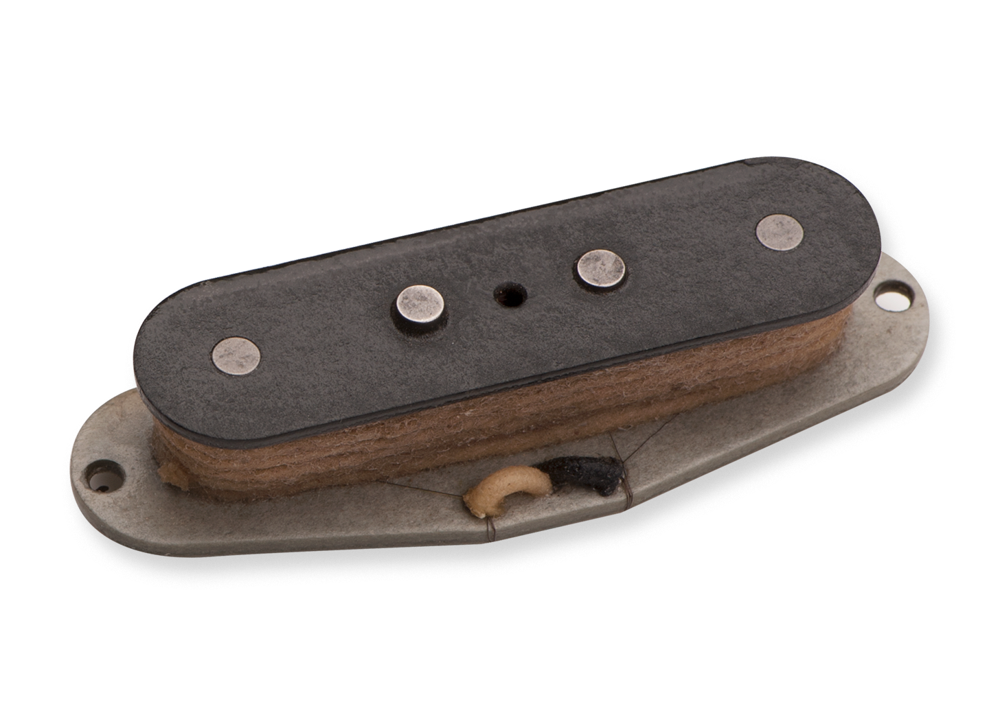
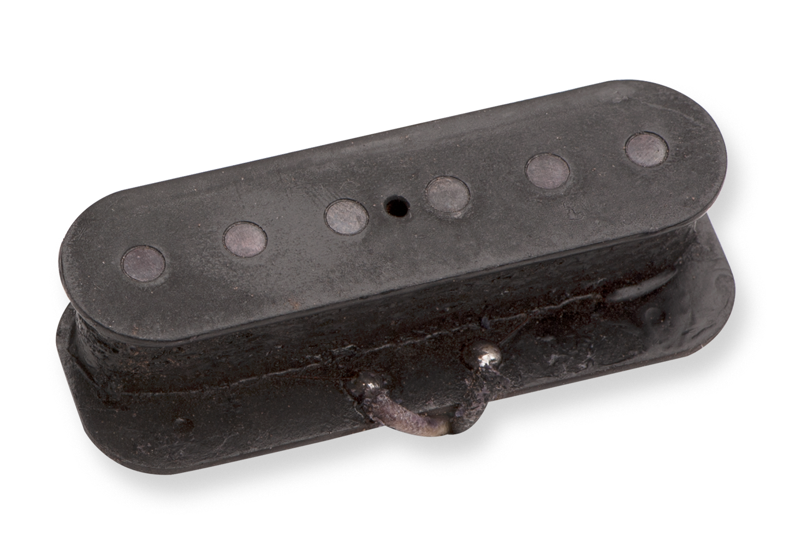

During the big band era of the 1930’s and 40’s, swing music began to incorporate larger brass sections. 
This prompted the need for an amplified guitar in order to be heard. Early attempts at producing a louder instrument came in the form of resonator guitars, which consisted of thin, cone-like aluminum resonators placed inside a metal body. Although these guitars were successful in making the instrument louder, resonator guitar tones simply didn’t compliment a broad variety of music, and therefore did not stand as the long-term solution to volume issues. Resonator guitars would go on to be successful in their own right, most notably in bluegrass and blues music.
Engineers experimented with electrically powered instruments such as musical boxes and player pianos as early as the 1800s. However, the first attempts at amplified instruments did not come until the development of electrical amplification in the 1920’s. One of the earliest pioneers was a Gibson engineer named Lloyd Loar. In 1924 he developed an electric pickup for the viola and other stringed instruments. In his design, the strings passed vibrations through the bridge to the magnet and coil, which registered those vibrations and produced an electrical signal. These designs attempted to amplify the natural sound of guitars, but produced a very weak signal. It was not until the invention of a more direct pickup system, which used an electromagnet to register vibrations directly from the strings, that the modern guitar pickup was born.
The first commercially produced guitar to use this method was actually a Hawaiian style guitar called the “Frying Pan”, which was developed and marketed by George Beauchamp and Adolph Rickenbacher in 1932. This concept would then be applied to hollow body archtop/semi acoustic guitars. These guitars produce a full and rich tone due to their chambers -but are prone to feedback when played at high volumes.

As a result, a fewindividuals (of which Les Paul is probably the most well known) began experimenting with a new kind of electric guitar, which used the same magnetic pickup as earlier designs, but mounted on a solid block of wood. Thus the modern day electric guitar was born as a result of the electromagnetic pickup.
Although there have been modern refinements to magnetic pickups, the basic concept and design has remained the same for many years. In-fact many modern guitar players are still using classic pickups based on designs from the 50’s and 60’s. One example is the 57/62 single-coil pickups from Fender, which are based on the original design from that era.
Whether or not you use single-coil or humbucking pickups remains personal preference, and is often dictated by the style of music in question. As a result, most guitarist have a wide range of guitars for different purposes, and although digital guitar modelling has come a long way, most guitar players still prefer the feel and tone of the real designs. Therefore, these guitars remain a niche market aimed at guitar players who are less concerned with traditional tone, and more concerned with reducing the size of their live rig. No doubt the accuracy of these designs will attract more and more players as the technology develops, but for the time being the traditional magnetic pickup remains the electric guitar players first choice.